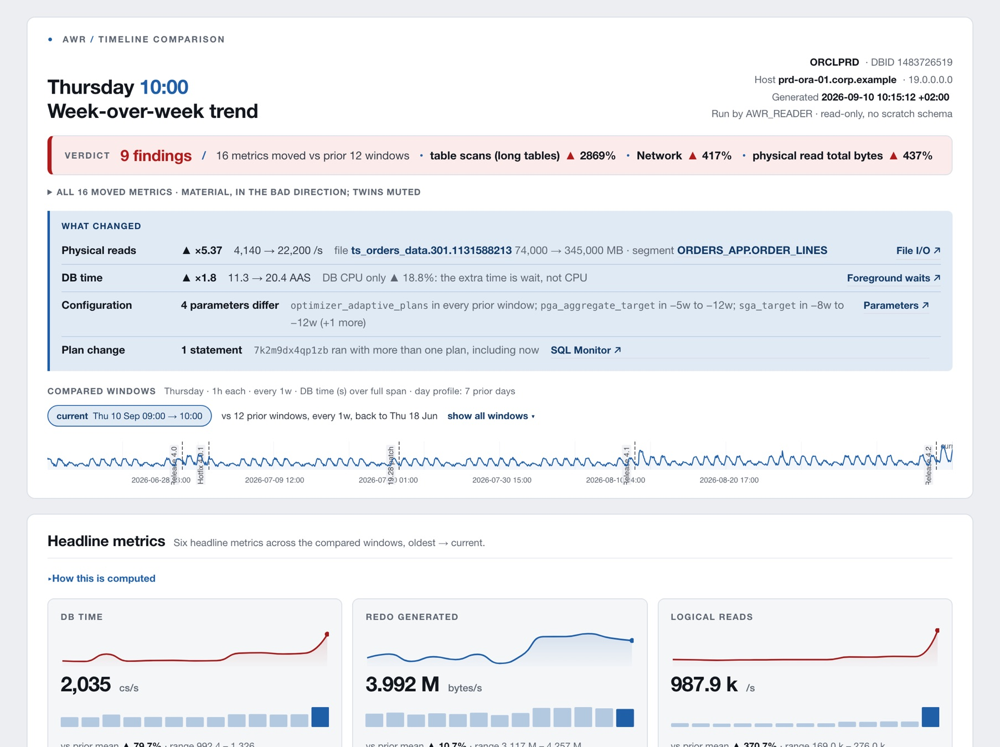
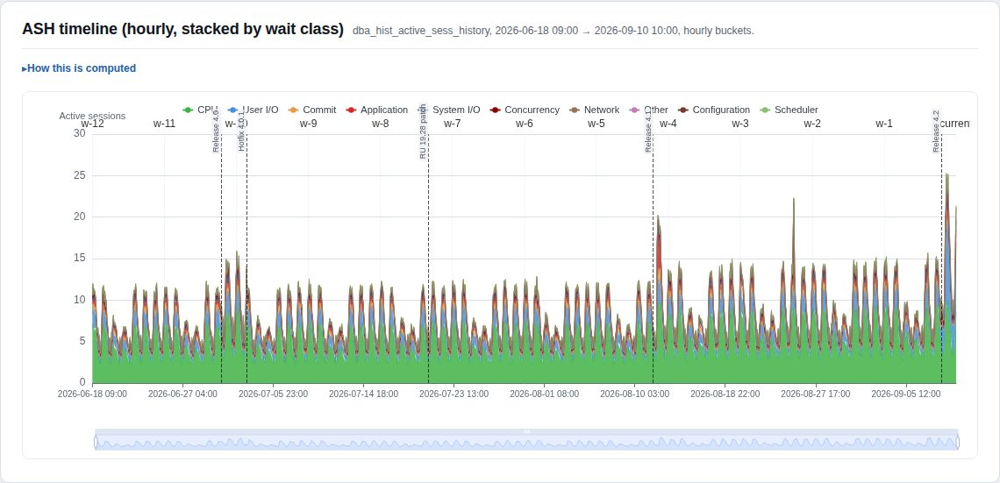
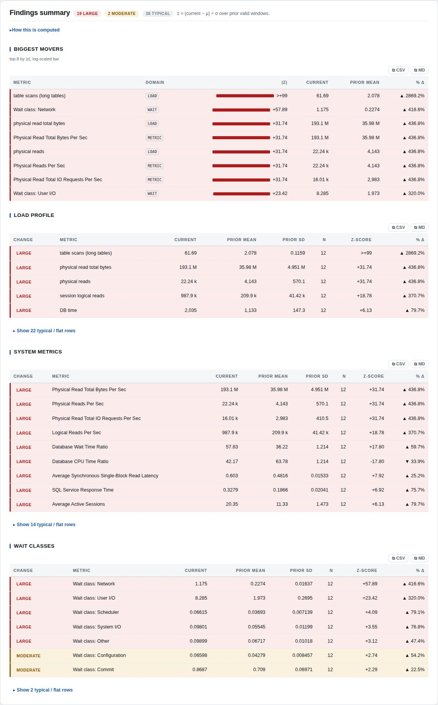

AWR Timeline Comparison
Pure-SQL toolkit that compares Oracle AWR snapshots of the same hour across periods (this Thursday 09:00–10:00 against the twelve prior Thursdays), scores every metric against that history, and renders a single self-contained HTML report. One database in depth, or a whole fleet on one worst-first page. Read-only by construction.
Features
- Aligned windows. Same hour of the same weekday, N periods back; weekly, daily or hourly cadence, any window width.
- Statistical grading. z = (current − μ) ÷ σ over the prior valid windows for load statistics, system metrics, wait classes, Top SQL, segment and file I/O.
- Verdict and narrative. One-line verdict, biggest movers, rule-based “what changed” prose linking into the evidence.
- SQL to plan line. Top SQL ranked five ways with plan-hash flips, per-SQL ASH, SQL Monitor summaries and plan-line drift.
- Fleet console. Every database in parallel, one dense worst-first table, unreachable databases surfaced as error rows.
- Offline-complete output. One HTML file; chart library inlinable for air-gapped hosts; every number also in a table.
Applications
- Post-release and post-patch regression detection against the weekly baseline.
- Morning fleet triage: which of forty databases needs a look today.
- “Was last night's batch normal?” with a daily cadence.
- Incident timelines annotated with deploys, patches and known events.
- Capacity drift over a quarter at a fortnightly or monthly cadence.
Description
The driver awr_trend.sql and every numbered section issue SELECT only against
DBA_HIST_*; nothing is created, modified or committed, so it runs as a read-only analyst and on a physical
standby. A thin bash wrapper sets substitution variables; the same DEFINEs run from a bare SQL*Plus session.
Open the demo report
A busy production database over twelve weeks: four releases, a patch, a plan flip in the current window. Every section live.
open → ↓ Quick access · InstallationInstall and run in four steps
Clone, point SQL*Plus at a user that can read the AWR views, run one command. Nothing is created in the database.
section 4 →Contents
- 1Overview
- 2Key characteristics
- 3Method of operation
- 4InstallationQuick access
- 5Fleet console
- 6Single-database report
- 7Templates
- 8Example reportsQuick access
- 9References
Overview
A busy Monday morning is only a problem if it is busier than the last four Monday mornings. The toolkit takes that as its unit of comparison: it resolves the AWR snapshot pair enclosing the requested hour in each prior period, computes the deltas per window, and scores the current window against the distribution of the prior ones. The result is a report whose first line is a graded verdict, whose masthead names the biggest movers, and whose sections carry every supporting number.

Key characteristics
| Parameter | Value | Notes |
|---|---|---|
| Database writes | 0 | SELECT only; no DDL, DML or COMMIT; no scratch schema. Runs on a physical standby. |
| Target platform | Oracle Database 19c | Diagnostic + Tuning Pack licence required (reads DBA_HIST_*, DBA_HIST_SQLSTAT, DBA_HIST_REPORTS). |
| Runtime | SQL*Plus | Thin bash wrapper optional; pure-SQL*Plus invocation supported (Windows-friendly). No Python, no agents. |
| Required grants | SELECT on 16 views | Any DBA account, or a dedicated analyst user; list in the README. |
| Output | 1 HTML file | Self-contained; ECharts from CDN, an internal mirror, or inlined from vendor/ for offline use. Tables never depend on the chart library. |
| Comparison cadence | h · d · w × step | Weekly (default), daily, hourly, or any multiple (fortnightly, every fourth week). |
| Window width | 0.25 h … 24 h+ | Snapshots resolved with a 5-minute tolerance; a window >15 min off the snapshot grid is skipped, not guessed. |
| Prior windows | 1 … 16 | z-scores need ≥ 3 valid priors; fewer renders insufficient history. |
| Grading | |z| > 2, |z| > 3 | typical moderate large; flat baselines flagged σ≈0. |
| Report sections | 19 | Verdict and narrative, headline cards, ASH timeline, DB time span, findings, windows, day profile, utilization, load profile, metrics, waits (fg/bg), Top SQL, per-SQL ASH, SQL Monitor with plan-line drift, segment I/O, file I/O, parameters. |
| Templates | comprehensive · simple · dev | Curated metric and wait lists per audience; user templates are a three-file directory. |
| Client-side modes | 4 | Dark mode, Triage mode, Essential rows, Application only; plus row filter, sortable headers, CSV/Markdown export. |
| RAC / multitenant | supported | Per-instance window validity, additive vs. ratio metric roll-up; PDB and migrated-PDB DBID handling. |
| Fleet console | N databases, parallel | One worst-first table; error rows for unreachable, timed-out or truncated extracts; optional per-DB detailed reports; inline SVG only. |
| Timeline markers | inline or file | Releases, patches and incidents drawn on every dated chart (single-DB and fleet-wide). |
| Licence | see repository | Bundled ECharts is Apache-2.0 (vendor/ carries licence and notice). |
Method of operation
3.1 Window alignment
For a target end instant and a cadence, the driver resolves weeks_back + 1 windows, each win_hours wide, ending step periods apart. For each window the enclosing AWR snapshot pair is located; a window whose snapshots are missing, straddle an instance restart or a DBID change, or sit more than 15 minutes off the requested edge is marked skipped and excluded from the baseline.
3.2 Scoring
Cumulative counters are differenced per window (end − begin) and divided by the resolved span; sampled metrics are averaged. The current window's value is compared with the mean and sample standard deviation of the prior valid windows. Sections 07 and 08 recompute rather than share, so each is self-consistent.
3.3 Rendering
Every section emits its own HTML through DBMS_OUTPUT into one spool. Charts render from the same cursor as their tables, so the numbers on screen are the numbers plotted.
Window strip and verdict as rendered in the masthead of the demo report; a release two days earlier flipped one execution plan.
| Condition | Bucket | Rendered as |
|---|---|---|
| |z| > 3 | large | large |
| 2 < |z| ≤ 3 | moderate | moderate |
| |z| ≤ 2 | typical | typical |
| n < 3 | insufficient history | insufficient history |
| σ = 0 | flat baseline | flat baseline |
Installation Quick access
Nothing is installed in the database. Clone the repository on any machine with SQL*Plus and a user that can read the AWR views; a read-only standby that exposes AWR works too.
Clone the repository.
git clone https://github.com/davidbudac/awr_timeline_comparison.git cd awr_timeline_comparison
Confirm the connecting user can read the AWR views (any
DBAaccount qualifies; otherwise grantSELECTon the views listed in the README).Run with defaults: the prior full hour against the same hour on the four prior weeks. The report lands in
reports/../run_awr_trend.sh user/pw@svc
Or let the interactive configurator build the command (also available as the web configurator).
./run_awr_trend.sh --configure
Fleet console run_awr_fleet.sh
Point the fleet wrapper at a list of databases. It runs the same aligned-window comparison against every one in parallel and assembles a single worst-first console: one dense collapsed row per database (status, severity score, crit/warn pills, current AAS, worst finding, DB-time sparkline, 24-hour ASH ribbon) expanding in place to a full detail panel.
Create
fleet.conf, onealias | connectper line. Passwords are masked in every log and report.# alias | connect prod-emea | /@PRODEMEA prod-amer | /@PRODAMER reporting | reporting_ro/@RPTRun. Optionally mark a fleet-wide event on every database's ASH chart.
./run_awr_fleet.sh fleet.conf MARKERS='2026-04-20 14:00|Applied patch 19.22' ./run_awr_fleet.sh fleet.confOpen
reports/awr_fleet_<ts>_run<id>/index.html. Error rows sort first; click any row to expand it.
| Condition | Behaviour |
|---|---|
| Database unreachable, timed out, or spool truncated | Red error row sorted to the top with the masked connect string and the log tail. Silence is never mistaken for health. |
| Drill-down | Every row prints the exact single-DB command; FLEET_DETAIL=all generates the full reports in the same run, linked from the row. |
| Markers | MARKERS / MARKER_FILE drawn on every database's timeline at the same instant. |
| Day profile | FLEET_PROFILE_DAYS=7 adds an hour-of-day heatmap to every detail panel. |
| Output | One relocatable folder per run; inline SVG only, no CDN; optional zip/tar archive. |
| Exit code | 0 = ≥1 OK · 3 = all failed · 2 = bad config · 4 = archive failed |
Single-database report run_awr_trend.sh · awr_trend.sql
| # | Name | Default | Meaning |
|---|---|---|---|
| 1 | connect | — | user/pw@svc, /, or any SQL*Plus connect string |
| 2 | target_end | AUTO | Prior full hour, or 'YYYY-MM-DD HH24:MI'; snapped to the last snapshot when off-grid |
| 3 | win_hours | 1 | Width of every compared window |
| 4 | weeks_back | 4 | Number of prior windows (a count, not necessarily weeks) |
| 5 | top_n | 10 | Rows per ranking in Top SQL, waits, segments, files |
| 6 | inst_num | 0 | RAC: 0 aggregates all instances, >0 pins one |
| 7–8 | step step_unit | 1 w | Cadence between adjacent windows: h / d / w × step |
| 9 | template | comprehensive | See Templates |
| 10 | debug | Y | Per-section progress markers on stdout; HTML unaffected |
| 11 | marker_file | '' | Timeline-marker config file; or the MARKERS env var inline |
| 12 | profile_days | 0 | Day profile: each hour of the last 24 h vs the same hour on N prior days |
| 13 | sqlmon_detail | 0 | Plan-line drift for the N most regressed SQL Monitor statements |
Environment variables: MARKERS (inline milestones), ECHARTS (CDN, mirror URL, or local path to inline), ARCHIVE (zip / tgz / tar). Full recipes in the cheat sheet.
A specific Monday morning against the four prior Mondays.
./run_awr_trend.sh user/pw@svc '2026-04-13 09:00'The last four hours, hour by hour; then a lean triage report.
./run_awr_trend.sh user/pw@svc AUTO 1 4 10 0 1 h ./run_awr_trend.sh user/pw@svc AUTO 1 4 10 0 1 w simple
Milestones on every dated chart, plus day profile and plan-line drift for the top three regressed statements.
MARKERS='2026-04-20 14:00|Applied patch 19.22' ./run_awr_trend.sh user/pw@svc ./run_awr_trend.sh user/pw@svc AUTO 1 4 10 0 1 w comprehensive Y '' 7 3
Fully offline, self-contained file (ECharts inlined from
vendor/).ECHARTS=vendor/echarts.min.js ./run_awr_trend.sh user/pw@svc
Pure SQL*Plus, no shell: load the defaults, then the driver, as two separate commands.
SQL> @sql/defaults.sql SQL> DEFINE target_end = '2026-04-15 09:00' SQL> DEFINE weeks_back = 6 SQL> @awr_trend.sql
| Group | Sections | Source views |
|---|---|---|
| Triage | DB time over the full span, headline cards, ASH timeline by wait class, findings with biggest movers, aligned windows | SYS_TIME_MODEL, SYSSTAT, ACTIVE_SESS_HISTORY, SNAPSHOT |
| Workload | Day profile, utilization, load profile, system metrics, foreground and background waits | SYSSTAT, SYSMETRIC_SUMMARY, SYSTEM_EVENT, BG_EVENT_SUMMARY |
| SQL | Top SQL ranked five ways with plan-hash flips, per-SQL ASH, SQL Monitor with plan-line drift | SQLSTAT, SQLTEXT, ACTIVE_SESS_HISTORY, REPORTS, REPORTS_DETAILS |
| Storage & config | Top segments and files by I/O, I/O by file type, parameters differing across windows | SEG_STAT, FILESTATXS, IOSTAT_FILETYPE, PARAMETER |


Templates
The template argument selects which curated set of metrics and wait events the single-database report renders. The comparison engine is identical.
| Template | Audience | Content |
|---|---|---|
| comprehensive | DBAs default | Full curated lists; every wait event ranked by time. |
| simple | Triage | Quick-glance subset for a thirty-second skim. |
| dev | Application teams | Throughput, query work, parsing, SQL*Net chattiness, application-caused contention; host/OS and storage internals omitted. |
A user template is a directory sql/lib/templates/<name>/ with three target-list files plus one whitelist entry in the driver.
Example reports Quick access
Single HTML files exactly as the toolkit spooled them. Three are real reports from a small lab database; the first is synthetic (a generated dataset of a busy production database over three months) so that every section has something to show.
Busy production database, twelve weeks, four releases and a patch
Weekly cadence, 12 prior windows, day profile and plan-line drift on. The latest release flipped an execution plan: physical reads ×5, User I/O ×4, a large verdict, the SQL_ID named in the narrative.
open → comprehensivehourlyFull report, lab database
Default template, hour-over-hour cadence.
open → simplehourlyTriage view
template=simple: the lean subset of stats, metrics and waits.
With timeline markers
Inline markers drawn on every dated chart.
References
- Source
- github.com/davidbudac/awr_timeline_comparison — README (grants, arguments, fleet reference), CHANGELOG, CLAUDE.md (design conventions).
- Cheat sheet
- Ready-to-paste recipes: cadences, RAC, templates, markers, offline reports, playbooks, retention check, fleet.
- Configurator
- Web configurator: builds the wrapper command or the SQL*Plus DEFINE block in the browser; nothing leaves the page.
- Requirements
- Oracle Database 19c, Diagnostic + Tuning Pack, SQL*Plus, a user with SELECT on the AWR history views.
- Revision
- awr_trend.sql v1.4.0 · fleet 0.6.0 · datasheet September 2026